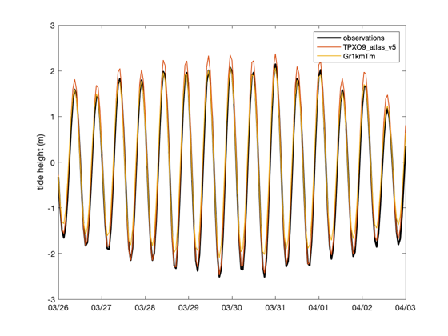
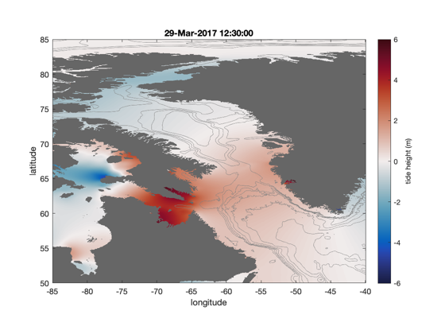
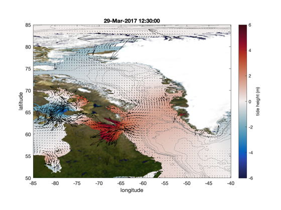
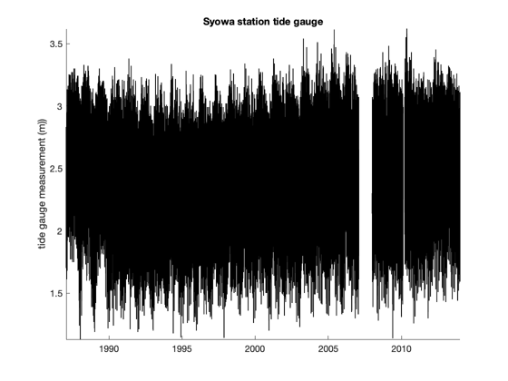
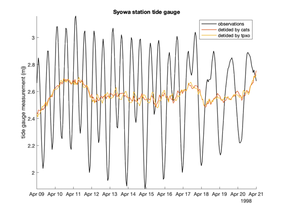
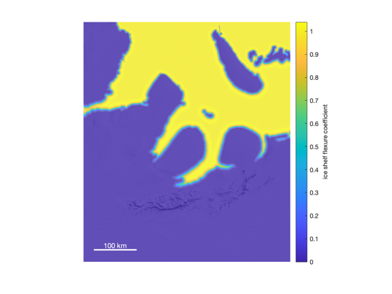
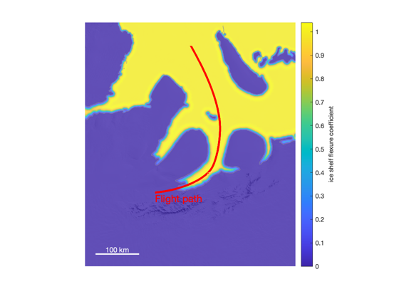
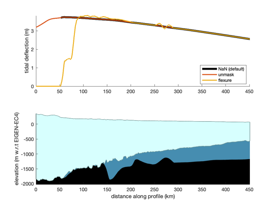
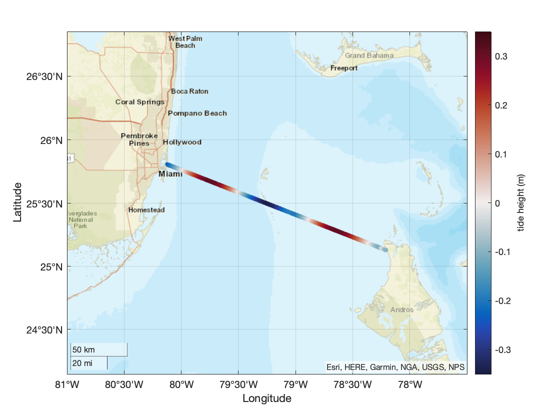

tmd_predict documentation
tmd_predict constructs tidal predictions from the complex constituent coefficients in consolidated NetCDF tide model files.
Contents
Syntax
z = tmd_predict(filename,lat,lon,time) z = tmd_predict(filename,lat,lon,time,ptype) z = tmd_predict(filename,lat,lon,time,ptype,'constituents',conList) z = tmd_predict(...,,'coasts',MaskingMethod) z = tmd_predict(...,'InferMinor',true_or_false)
Description
z = tmd_predict(filename,lat,lon,time) predicts tide heights at the specified lat,lon and time, using the TMD3.0 compatible consolidated NetCDF tide model data file. Location(s) lat,lon are decimal degrees, and can be scalars, vectors, or MxN arrays. Input time can be datetime or MATLAB's datenum format, and must be a scalar or a 1D vector.
z = tmd_predict(filename,lat,lon,time,ptype) specifies a solution type. If ptype is not specified, 'h' is the assumed ptype. Note the ptype is case sensitive! Options for ptype are:
- 'h' tidal height (m) (default)
- 'u' zonal current velocity, positive pointing east (m/s)
- 'v' meridional current velocity, positive pointing north (m/s)
- 'U' zonal transport (m^2/s)
- 'V' meridional height (m^2/s)
z = tmd_predict(filename,lat,lon,time,ptype,'constituents',conList) specifies tidal constituents as a cell array (e.g, {'m2','s2'}). If constituents are not specified, all constituents from the model are used.
z = tmd_predict(...,,'coasts',MaskingMethod) specifies how coastal regions are masked. Can be NaN, 'flexure', or 'unmask'. By default, MaskingMethod is NaN, meaning outputs are set to NaN wherever a nearest-neighbor interpolation of the ocean indicates land. The 'flexure' option scales tidal constituents by a predicted coefficient of tidal deflection for ice shelf grounding zones (for CATS only). A third option, 'unmask', does not apply any masking, which may be preferred close to coasts, where, for example, a tide gauge may exist between land and ocean grid cells.
z = tmd_predict(...,'InferMinor',true_or_false) specifies whether minor constituents should be inferred (true or false). By default, minor constituents are inferred unless constituents are specified.
Example: Tide gauge time series
This example uses data from a tide gauge near Nuuk, Greenland. The example data is in the doc/example_data folder of this toolbox.
Start by loading the tide gauge data, then predict tides at that location using the 15 constituent global `TPXO9_atlas_v5` model and the 8 constituent `Gr1kmTM` regional model.
% Load tide gauge data: fn = 'h820_nuuk.nc'; lat = ncread(fn,'lat'); lon = ncread(fn,'lon'); t = ncread(fn,'time')+datenum(1800,1,1,0,0,0); % units = 'days since 1800-01-01 00:00:00' sl = ncread(fn,'sea_level')/1000; % Predict tides at the tide gauge location: sl_tpxo9 = tmd_predict('TPXO9_atlas_v5.nc',lat,lon,t,'h'); sl_Gr1km = tmd_predict('Gr1kmTM_v1.nc',lat,lon,t,'h'); % Plot observed and predicted tides: figure plot(t,sl-mean(sl,'omitnan'),'k','linewidth',2) hold on plot(t,sl_tpxo9,'linewidth',1) plot(t,sl_Gr1km,'linewidth',1) ylabel 'tide height (m)' legend('observations','TPXO9_atlas_v5','Gr1kmTm','interpreter','none') xlim([datenum('mar 26, 2017') datenum('april 3, 2017')]) datetick('x','keeplimits')
In the figure above, we see that both the global and regional models match the observations pretty well, but neither is perfect. One way to assess tide model performance is to measure the distribution of the residuals after detiding an observation dataset. Here's what that might look like:
% Residuals of raw data, detided w/tpxo0, & detided w/Gr1km: std([sl sl-sl_tpxo9 sl-sl_Gr1km],'omitnan')
ans =
1.0836 0.1747 0.1927
The numbers above show that the raw data have a standard deviation of about 1.08 m. The 0.17 m standard deviation of residuals after detiding with TPXO9 suggests that TPXO9 does a slightly better job of capturing tidal variability here than Gr1kmTM, which has a 0.19 m distribution of residuals after detiding. In reality, a tide gauge captures dynamic ocean topography, variations in atmospheric pressure, and other phenomena that are not directly related to tidal variability, so the presence of residuals should not indicate failure of a model. It is possible that Gr1kmTM is as good or better than TPXO9 at this particular location, but further analysis is beyond the scope of this function reference page.
Example: Map of tidal amplitude and currents
Here's a map of tidal amplitudes at 12:30 in the afternoon on March 29, 2017. Note that TPXO9_atlas_v5 is a high resolution dataset with 15 constituents, so it may take a few seconds to predict a dense grid covering a large area. The Z prediction takes about 5 seconds on my laptop from 2019.
Below, we also use tmd_interp to get the model's water column thicknes for context, and we plot 500 m wct contours as thin gray lines.
The cmocean colormap function is part of the Climate Data Toolbox for MATLAB and is also available as a standalone function from the MathWorks File Exchange.
% Define a time: t = datetime('march 29, 2017 12:30'); % A grid of lat,lon locations: lon = -85:0.025:-40; lat = 85:-0.025:50; [Lon,Lat] = meshgrid(lon,lat); % Predict tidal heights at time t (may take a few seconds): Z = tmd_predict('TPXO9_atlas_v5.nc',Lat,Lon,t); % Get water column thickness: wct = tmd_interp('TPXO9_atlas_v5.nc','wct',Lat,Lon); % Make a map: figure h = imagesc(lon,lat,Z); h.AlphaData = isfinite(Z); % makes nans transparent set(gca,'color',.4*[1 1 1]) % makes transparent areas gray axis xy image hold on [~,hC] = contour(lon,lat,wct,500:500:5000); hC.Color = 0.5*[1 1 1]; % gray contour lines hC.LineWidth = 0.3; % thin contour lines caxis([-6 6]) % color axis limits cb = colorbar; ylabel(cb,'tide height (m)') xlabel longitude ylabel latitude title(datestr(t)) cmocean balance % optional colormap
Now add tidal currents. Again, it will take about 5 seconds for each component. Below, I'm using Climate Data Toolbox functions quiversc and earthimage. The quiversc function is convenient because it performs anti-aliased downsampling of the dense u,v grid.
% Calculate zonal and meridional components of tidal currents: u = tmd_predict('TPXO9_atlas_v5.nc',Lat,Lon,t,'u'); v = tmd_predict('TPXO9_atlas_v5.nc',Lat,Lon,t,'v'); % Add u and v to the previous map: ax = axis; q = quiversc(Lon,Lat,u,v,'density',100,'k'); q.AutoScaleFactor = 20; axis(ax) % resets limits after quiver might've adjusted them he = earthimage; % optional, part of Climate Data Toolbox uistack(he,'bottom') % places earth image under ocean data.
Example: NaNs near the coast
In some cases, you may be interested in a tide gauge close to the coast that gets NaN'd out by default because it lies between land and ocean pixels. Consider this tide gauge near Syowa Station, Antarctica:
% Load example tide gauge data (found in the doc/example_data folder.) fn = 'h127_syowa.nc'; lat = ncread(fn,'lat'); lon = ncread(fn,'lon'); t = ncdateread(fn,'time'); sl = ncread(fn,'sea_level')/1000; figure plot(t,sl,'k','linewidth',1) box off axis tight ylabel 'tide gauge measurement (m)') title 'Syowa station tide gauge'
For 26 years, the tide gauge at Syowa station has logged hourly tides, with only a few interruptions. Clearly, tidal variability exists here, but what does the CATS model think?
% Predict tides at the location of interest: sl_cats = tmd_predict('CATS2008_update_2022-06-11.nc',lat,lon,t,'h'); % See how many tide predictions are finite: sum(isfinite(sl_cats))
ans =
0
The Syowa tide gauge is closer to a land pixel than an ocean pixel in the CATS model, so it gets NaN'd out by default. To un-NaN the interpolation, choose the 'unmask' option:
sl_cats = tmd_predict('CATS2008_update_2022-06-11.nc',lat,lon,t,'h','coasts','unmask'); sl_tpxo = tmd_predict('TPXO9_atlas_v5.nc',lat,lon,t,'h','coasts','unmask'); % Plot observations "detided" by each model: hold on plot(t,sl-sl_cats,'linewidth',1) plot(t,sl-sl_tpxo,'linewidth',1) xlim([datetime('apr 9, 1998') datetime('apr 21, 1998')]) % zooms for clarity legend('observations','detided by cats','detided by tpxo','locaton','best')
Warning: Ignoring extra legend entries.
Example: Ice shelf flexure
This example assumes you have Antarctic Mapping Tools with the MODIS MOA and BedMachine plugins. Sorry about all of the dependencies, but I think it's important for context.
Start by defining a 500 m resolution grid around the grounding line of Rutford Ice Stream, Antarctica. Then calculate and display the estimated ice shelf flexure everywhere on the grid.
% Create a polar stereographic grid: res = 500; % grid resolution in meters x = -1474594:res:-991780; y = 521366:-res:-38552; [X,Y] = meshgrid(x,y); [Lat,Lon] = ps2ll(X,Y); % ll2ps is an AMT function. % Estimate ice shelf flexure at each point on the grid: flex = tmd_interp('CATS2008_update_2022-06-11.nc','flexure',Lat,Lon); figure h = imagesc(x,y,flex); h.AlphaData = 0.8; % transparency axis xy image off modismoaps('contrast','white') cb = colorbar; ylabel(cb,'ice shelf flexure coefficient') bedmachine % plots a gray grounding line scalebarps('color','w')
Let's imagine you collected laser altimetry by flying an airplane down the central trunk of Rutford Ice Stream. (For this example, we'll neglect the time it takes to fly the plane, and imagine you flew the whole flight path instantaneously).
Here's what your flight line looks like:
% Define a crude flowline: [xi,yi] = pspath([-1314322 -1181878 -1166297 -1231962],... [ 130911 191012 300084 468143],... 100,'method','makima'); % 100 m spacing, makima interpolation % Calculate the distance along the flowline in kilometers: di = pathdistps(xi,yi,'km'); hold on plot(xi,yi,'r','linewidth',3) text(xi(1),yi(1),'Flight path','color','r','fontsize',14,'vert','top')
Detiding your airborne laser altimetry along this flight line requires some knowledge of how much the ice surface should move as a result of tides. The default behavior of tmd_predict assumes the entire ice shelf is in total hydrostatic equilibrium and moves up and down with the total deflection of the tides, while grounded ice is NaN'd out. You can 'unmask' the solution to get some information landward of the ocean pixels, or you can try to estimate ice 'flexure' from a forward model.
Here's what the tidal solutions look like by default, unmasked, and accounting for ice shelf flexure:
% Convert to geo coordinates: [lati,loni] = ps2ll(xi,yi); % Time of high tide at Rutford Ice Stream: t = datenum('22-Jan-2000 03:28:00'); % Predict tides along the flight path at time t: fn = 'CATS2008_update_2022-06-11.nc'; z_default = tmd_predict(fn,lati,loni,t,'h'); z_unmask = tmd_predict(fn,lati,loni,t,'h','coasts','unmask'); z_flexure = tmd_predict(fn,lati,loni,t,'h','coasts','flexure'); figure subplot(2,1,1) plot(di,z_default,'k','linewidth',4) hold on plot(di,z_unmask,'linewidth',2) plot(di,z_flexure,'linewidth',2) box off axis tight legend('NaN (default)','unmask','flexure','location','best') ylabel 'tidal deflection (m)' % Plot bedmachine profile for context: subplot(2,1,2) bedmachine_profile(lati,loni,'horiz',di) axis tight xlabel 'distance along profile (km)'
Example: Drift track
We've all been there. You've gassed up your dinghy, and you're about to run some illegal substances from Miami Beach to Red Bay, Bahamas. You know the trip will take 24 hours, but you're not sure what kind of tides you'll experience along the way. Well, there's nothing to worry about, because we have TMD!
% 24 hours of data at 1 minute resolution: t = datetime('may 27, 2022 6:00'):minutes(1):datetime('may 28, 2022 6:00'); % GPS locations along the way from Miami to Bahamas: lat = linspace(25.8063895,25.1288549,length(t)); lon = linspace(-80.1228916,-78.2059635,length(t)); % Predict tides along the drift track: z = tmd_predict('TPXO9_atlas_v5.nc',lat,lon,t,'z','coasts','unmask'); figure geoscatter(lat,lon,20,z,'filled') geolimits([24.5 26.5],[-81 -77.5]) geobasemap streets caxis([-1 1]*.35) cmocean balance cb = colorbar; ylabel(cb,'tide height (m)')
The blue on each end of the trip means you'll depart and arrive at low-ish tide, and the two red sections means you'll experience two high tides along the way.
Example: Time series of maps
If you give tmd_predict an MxN array of geographic points along with a 1D vector of times, the function will return a cube of tide solutions whose dimensions correspond to the dimensions of the geographic grid and the number of timesteps.
Be careful: Depending on the number of grid points and the number of timesteps, the cubes created by tmd_predict can easily become huge and/or take a long time to solve. Here we predict for 25 hourly solutions for the Arctic Ocean.
For this example, we're creating a grid in equally spaced polar stereographic meters and then we convert the grid points to geographic coordinates. You can just as easily solve in equally-spaced geo points, but for this particular application, polar stereographic makes more sense, because every grid cell will end up being the same size. Below I'm using the Arctic Mapping Tools' psn2ll to convert the ps meters to lat,lon coordinates:
% Create a grid x = (-2700:5:3600)*1000; y = (2000:-5:-4000)*1000; [X,Y] = meshgrid(x,y); [Lat,Lon] = psn2ll(X,Y); t = datenum('march 29, 2017'):1/24:datenum('march 30, 2017'); Z = tmd_predict('Arc2kmTM_v1.nc',Lat,Lon,t);

If you're following along, you probably noticed it took a minute to churn through all 25 hourly solutions for a grid this size. That is expected, so again, be mindful that solving a long time series with short timesteps and a big grid will probably take a while to solve.
Here's a look at the data we just created:
whos Lat Lon Z t
Name Size Bytes Class Attributes Lat 1201x1261 12115688 double Lon 1201x1261 12115688 double Z 1201x1261x25 302892200 double t 1x25 200 double
Above, you see that Lat and Lon are both 1201x1261, t has 25 hourly timesteps, and Z's dimensions are then 1201x1261x25.
Here's what the data looks like when we animate it. Below, I'm using the cmocean and gif functions from the Climate Data Toolbox for MATLAB.
% Get water column thickness for visual context:
wct = tmd_interp('Arc2kmTM_v1.nc','wct',Lat,Lon);figure h = imagesc(x,y,Z(:,:,1)); h.AlphaData = wct>0; % makes land transparent hold on axis xy tight [~,hC] = contourpsn(Lat,Lon,wct,0:500:7000); hC.LineWidth = 0.25; hC.Color = .5*[1 1 1]; caxis([-1 1]*5) cmocean bal set(gca,'color',[.01 .21 0],... % makes land dark green 'xtick',[],'ytick',[],... % removes tick labels 'position',[0 0 1 1]); % fills the entire figure txt = text(.5,1,datestr(t(1),'mmm dd, yyyy HH:MM:SS'),... 'units','normalized','vert','top','horiz','center',... 'fontweight','bold','fontsize',16,'backgroundcolor','w');
gif('html/arctic_tides.gif','delaytime',1/10)
for k = 2:25
h.CData = Z(:,:,k);
txt.String = datestr(t(k),'mmm dd, yyyy HH:MM:SS');
gif
end
Author Info
The tmd_predict function and its documentation were written by Chad A. Greene, June 2022.